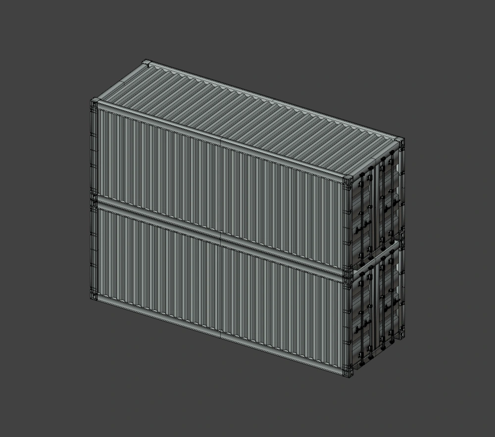
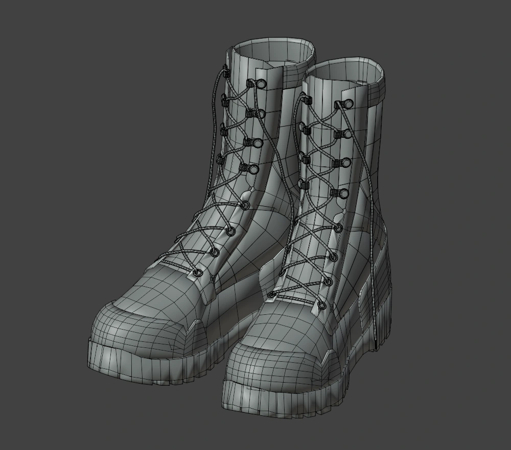

Prop studies / 형태와 표면
컨테이너, 군화, 모자의 구조와 표면 질감을 표현한 개인 연습작.

01 / Container
컨테이너의 반복 구조와 도장면

02 / Boot
군화의 실루엣과 재질


03 / Cap
모자의 곡면과 봉제선


ROLE & CREDITS
담당 작업
개인 연습작의 모델링과 재질 제작을 담당했습니다.
컨테이너, 군화, 모자의 구조와 표면 질감을 표현한 개인 연습작.
01 / Container

02 / Boot

03 / Cap
ROLE & CREDITS
개인 연습작의 모델링과 재질 제작을 담당했습니다.